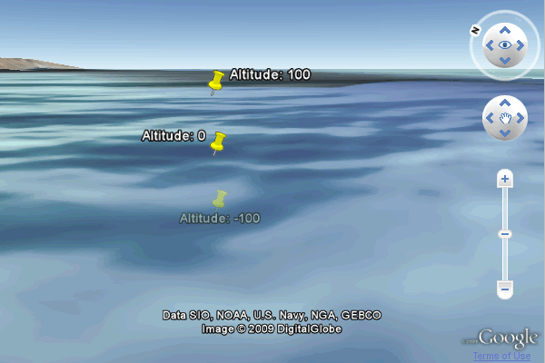
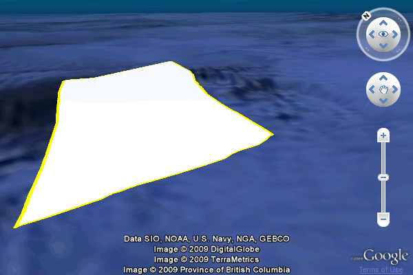
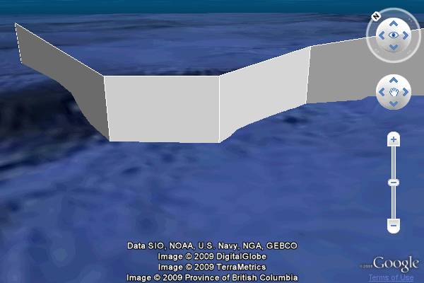

©2010 Google -
Code Home -
Terms of Service -
Privacy Policy -
Site Directory
Google Code offered in:
English -
Español -
日本語 -
한국어 -
Português -
Pусский -
中文(简体) -
中文(繁體)
The Google Earth Plugin supports underwater terrain and recognizes specific altitude modes to allow for placement of objects below the surface of major bodies of water.
To place objects or the camera underwater, use one of the following altitude modes:
ALTITUDE_ABSOLUTE: altitude values are calculated from sea level. The absolute altitude mode supports negative values.ALTITUDE_CLAMPED_TO_SEA_FLOOR: the altitude value is ignored and the feature or view is placed on the sea floor.ALTITUDE_RELATIVE_TO_SEA_FLOOR: the altitude value is calculated relative to the height of the sea floor at that geographic point.Absolute altitude modes are calculated from sea level. To place an object underwater, specify a negative altitude value. A negative altitude over land will place the object below the Earth's surface. Objects below the Earth's surface cannot be viewed or clicked.

Source: http://code.google.com/apis/earth/documentation/samples/underwater_placemark_example.html
var alt = -100;
// Create three placemarks, with altitudes of -100, 0, and 100.
for (var i = 0; i < 3; i++) {
// Create the placemark and add it to Earth.
var placemark = ge.createPlacemark('');
// Set the placemark's location.
var point = ge.createPoint('');
point.setLatitude(12.345);
point.setLongitude(54.321);
point.setAltitudeMode(ge.ALTITUDE_ABSOLUTE);
point.setAltitude(alt + i * 100);
placemark.setGeometry(point);
placemark.setName("Altitude: " + (alt + i * 100));
// Add the placemark to Earth.
ge.getFeatures().appendChild(placemark);
}
Clamping an object to the sea floor positions it on the bottom of a major body of water, if underwater terrain information is available. If no terrain information is available, CLAMP_TO_SEA_FLOOR behaves as CLAMP_TO_GROUND, and the object will be placed on the surface. This altitude mode ignores any altitude values specified for the object.
In the example below, each point of the polygon has an altitude value specified; note how the altitude is ignored in the rendered polygon.

Source: http://code.google.com/apis/earth/documentation/samples/underwater_polygon_example.html
// Create the placemark.
var polygonPlacemark = ge.createPlacemark('');
// Create the polygon and set the altitude mode.
var polygon = ge.createPolygon('');
polygonPlacemark.setGeometry(polygon);
polygon.setAltitudeMode(ge.ALTITUDE_CLAMP_TO_SEA_FLOOR);
// Add points for the shape.
var outer = ge.createLinearRing('');
outer.getCoordinates().pushLatLngAlt(48.303, -126.344, 700);
outer.getCoordinates().pushLatLngAlt(48.276, -126.366, 700);
outer.getCoordinates().pushLatLngAlt(48.273, -126.331, 700);
outer.getCoordinates().pushLatLngAlt(48.307, -126.311, 700);
polygon.setOuterBoundary(outer);
// Create a style and set width and color of line.
polygonPlacemark.setStyleSelector(ge.createStyle(''));
var lineStyle = polygonPlacemark.getStyleSelector().getLineStyle();
lineStyle.setWidth(10);
lineStyle.getColor().set('ff00ffff');
// Add the placemark to Earth.
ge.getFeatures().appendChild(polygonPlacemark);
Objects that are placed relative to the sea floor, when located over a major body of water for which underwater terrain information is available, have their altitude calculated from the floor of that body of water. If placed over land or over water for which terrain information is not available, the altitude is calculated from the surface level, as with ge.ALTITUDE_RELATIVE_TO_GROUND.
The example below places a lineString 768 meters above the sea floor.

Source: http://code.google.com/apis/earth/documentation/samples/underwater_linestring_example.html
// Create the placemark.
var lineStringPlacemark = ge.createPlacemark('');
// Create the LineString.
var lineString = ge.createLineString('');
lineStringPlacemark.setGeometry(lineString);
lineString.setAltitudeMode(ge.ALTITUDE_RELATIVE_TO_SEA_FLOOR);
// Add LineString points.
lineString.getCoordinates().pushLatLngAlt(48.3253, -126.3422, 768);
lineString.getCoordinates().pushLatLngAlt(48.2874, -126.3469, 768);
lineString.getCoordinates().pushLatLngAlt(48.2785, -126.3355, 768);
lineString.getCoordinates().pushLatLngAlt(48.2777, -126.3143, 768);
lineString.getCoordinates().pushLatLngAlt(48.2656, -126.3092, 768);
lineString.setExtrude(true);
// Add the feature to Earth.
ge.getFeatures().appendChild(lineStringPlacemark);